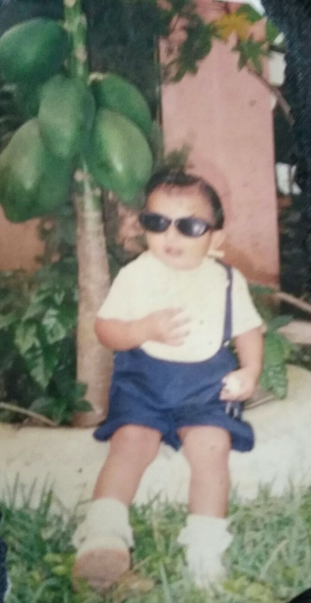
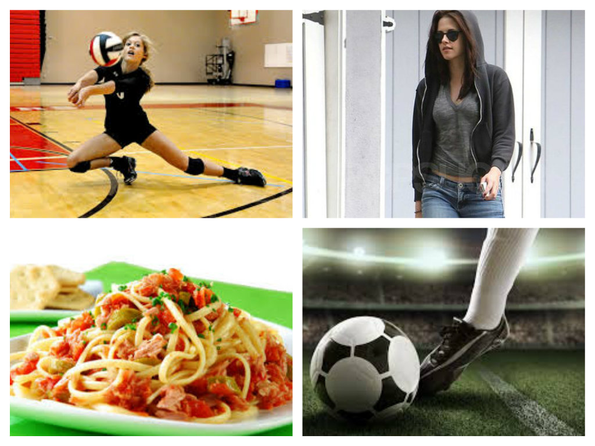
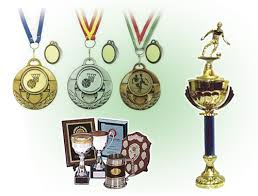
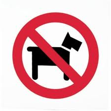

Datos
Mi nombre es Alondra Marisol Guzmán Osorio ,tengo 16 años, naci en el municipio ceiba,el 8 de julio
de 1998,mi tipo de sangre es A+ .Mis padres son: Jose Manuel Guzmán Cerón y Maria Osorio Martínez.
Tengo dos hermanos uno se llama Jose Manuel y tiene 8 años y mi hermana se llama Maricielo y tiene 10 años. soy de Xochinanacatlan del municipio de Tlaola, hay me crie ya que tambien haya se encuntra la familia de mi papa, vivi haya por 11 años a los doce me mude a San Miguel Acuautla por la carretera federal de Nuevo Necaxa solo por un año de allí otra ves regrese a mi lugar de crecimiento.

Alondra Marisol Guzmán Osorio
Estudios
Estudie dos años de preescolar con el mejor prefesor "mi padre" empece mis estudios en la primaria "El Pensador Mexicano" y a los doce años sali de la primaria "Hermenegildo Galeana" en San Miguel Acuautla , estudie en la Telesecundaria "Venustiano Carranza" los trse es años hasta finalizar y ahora me encuentro en el CBTis N0.86 en la carrera de "Programación" del 4° "E" pretndo terminar la prepa y de ahi eguir al CFP (Ciencias Forenses Perciales ) y mas adelante terminar todos mis estudios y poder ejercerlos.
Alondra Marisol Guzmán Osorio
Gustos
A mi me gusta mucho el deporte , cuando se habla de Futbol y el voleibol, eso es en deporte en comida me encanta el spaghetti , me gusta casi toda la comida, en la forma de vestir soy mas de jeans y playeras o blusas manga larga y tenis casi no me gustan las faldas o vestidos me siento incomoda ,megusta mucho salir acorrer con mi familia, tener esas largas conversaciones hasta las 2 o 3 de la mañana, me gusta tener la confianza que tengo con mis padres , y tambien me gusta que me digan verdades auque duela, me gusta mucho estar con mi familia.

Alondra Marisol Guzmán Osorio
Logros
Mis logros tras el transcurso de mi vida hansido pocos pero los mejores claramente, mis mejores logros fue desde chiquita aprendi a caminar alos 9 meses, en la secundaria mi equipo y yo ganamos 1°lugar en futbol y voleibol los tres años seguidos siendo yo del cuadro titular . tambien mi mayor logro fue sacar un reconocimiento en los tres años de secundaria .

Alondra Marisol Guzmán Osorio
Mascotas
En el transcurso de mi vida no he tenido mascotas amis padres no les gusta aunque megustaria, tener un conejo.

Alondra Marisol Guzmán Osorio